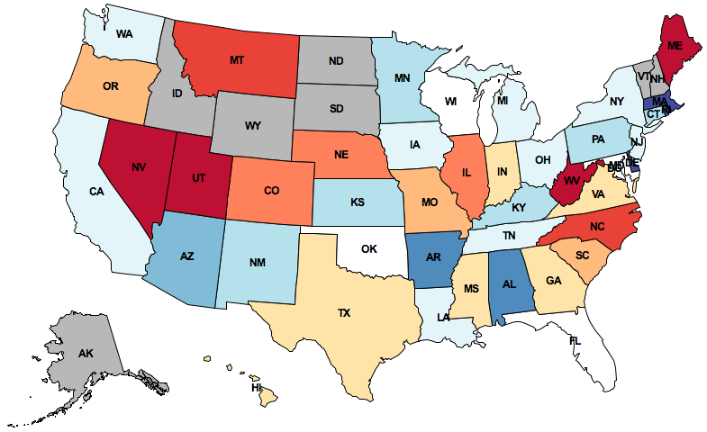

What do people tweet?
Draw their feelings on a map
to discover trends.
In this project, you will develop a geographic visualization of Twitter data across the USA. You will need to use dictionaries, lists, and data abstraction techniques to create a modular program. This project uses ideas from Sections 2.1, 2.2, 2.3, and 2.4, of the Composing Programs online textbook.
The map displayed above depicts how the people in different states feel about Texas. This image is generated by:
The details of how to conduct each of these steps is contained within the project description. By the end of this project, you will be able to map the sentiment of any word or phrase. The trends.zip archive contains all the starter code and all data (81 MB).
The project uses several files, but all of your changes will be made to the first one.
|
A starter implementation of the main project file. |
|
|
Geographic positions, 2-D projection equations, and geographic distance functions. |
|
|
Functions for drawing maps. |
|
|
Functions for loading Twitter data from files. |
|
|
A simple Python graphics library. |
|
|
Utility functions for 61A. |
|
|
Test code you can run yourself. |
|
Utility functions for grading. |
The data directory contains all the data files needed for the project, and it's necessary to run the project. The trends.zip archive contains this directory: download it to get started. Downloading each file individually is error-prone.
This is a one-week project. You'll work in a team of two people, and you can complete all problems together with your partner.
Start early! Feel free to ask for help early and often. The course staff is here to assist you, but we can't help everyone an hour before the deadline. Piazza awaits. You are not alone!
In the end, you and your partner will submit one project. There are 15
possible points (12 for correctness and 3 for composition). You only need to
submit the file trends.py. You do not need to modify any other
files for this project. To submit the project, change to the directory where the
trends.py file is located and run submit proj2.
We've included an autograder which includes tests for each question. You can invoke it for a particular question number as follows:
python3 trends_grader.py -q <question number>
You can also invoke the autograder for all problems at once using:
python3 trends_grader.py
trace, interact, and
log_current_line defined in ucb.py to inspect
a running program.
python3 -i trends.py
print calls to your functions, but remove them before
submitting your final version.
In this phase, you will create an abstract data type for tweets, split the text of a tweet into words, and calculate the amount of positive or negative feeling in a tweet.
First, we will define an abstract data type for tweets. To ensure that we do not violate abstraction barriers later in the project, we will create two different representations:
(A) The constructor make_tweet returns a Python dictionary with
the following entries:
'text': a string, the text of the tweet, all in lowercase 'time': a datetime object, when the tweet was posted 'latitude': a floating-point number, the latitude of the tweet's location 'longitude': a floating-point number, the longitude of the tweet's location
(B) The alternate constructor make_tweet_fn returns a function
that takes a string argument that is one of the keys above and returns the
corresponding value.
Problem 1 (1 pt). Implement the missing selector and constructor
functions for these two representations: tweet_text,
tweet_time, tweet_location correspond to
representation (A); make_tweet_fn corresponds to
representation(B).
For tweet_location you should return a
position object. The constructors and selectors for this
abstract data type can be found in geo.py. Remember to
preserve data abstraction!
The two representations created by make_tweet and
make_tweet_fn do not need to work together, but each constructor
should work with its corresponding selectors. The doctests for
make_tweet and make_tweet_fn ensure that this is the
case. They can be run along with other tests using:
python3 trends_grader.py -q 1
Next, we will retrieve the words from a tweet and compute their sentiment.
Problem 2 (2 pt). Improve the extract_words
function as follows: Assume that a word is any consecutive substring of
text that consists only of ASCII letters. The string
ascii_letters in the string module contains all
letters in the ASCII character set. The extract_words function
should list all such words in order and nothing else.
When you complete this problem, tests for question 2 should pass:
python3 trends_grader.py -q 2
Problem 3 (1 pt). Implement the sentiment abstract data
type, which represents a sentiment value that may or may not exist. The
constructor make_sentiment takes either a numeric value within the
interval -1 to 1, or None to indicate that the value does not
exist. Implement the selectors has_sentiment and
sentiment_value as well. You may use any representation you
choose, but the rest of your program should not depend on this
representation.
When you complete this problem, the question 3 tests should pass:
python3 trends_grader.py -q 3You can also call the
print_sentiment function to print the
sentiment values of all sentiment-carrying words in a line of text.
python3 trends.py -p computer science is my favorite! python3 trends.py -p life without lambda: awful or awesome?
Problem 4 (1 pt). Implement analyze_tweet_sentiment,
which takes a tweet (of the abstract data type) and returns a
sentiment. Read the docstrings for get_word_sentiment
and analyze_tweet_sentiment in trends.py to understand
how the two functions interact. Your implementation should not depend on the
representation of a sentiment!.
The tweet_words function should prove useful here: it
combines the tweet_text selector and
extract_words function from the previous questions to
return a list of words in a tweet.
When you complete this problem, the question 4 tests should pass:
python3 trends_grader.py -q 4
In this phase, we will implement two functions that together determine the centers of U.S. states. The shape of a state is represented as a list of polygons. Some states (e.g. Hawaii) consist of multiple polygons, but most states (e.g. Colorado) consist of only one polygon (still represented as a length-one list).
We will use the position abstract data type to represent geographic
latitude-longitude positions on the Earth. The data abstraction, defined at the
top of geo.py, has the constructor make_position and
the selectors latitude and longitude.
Problem 5 (2 pt). Implement find_centroid, which takes a
polygon and returns three values: the coordinates of its centroid and its area.
The input polygon is represented as a list of position values that
are consecutive vertices of its perimeter. The first vertex is always identical
to the last.
The centroid of a two-dimensional shape is its center of balance, defined as
the intersection of all straight lines that evenly divide the shape into
equal-area halves. find_centroid returns the centroid and area of
an individual polygon.
The formula for computing the centroid of a polygon appears on Wikipedia. The formula relies on vertices being consecutive (either clockwise or counterclockwise; both give the same answer), a property that you may assume always holds for the input.
Hint: latitudes correspond to the x values, and
longitudes correspond to the yvalues.
The area of a polygon is never negative. Depending on how you compute the
area, you may need to use the built-in abs function to return a
non-negative number.
Manipulate positions using their selectors (latitude and
longitude) rather than assuming a particular representation.
When you complete this problem, the question 5 tests should pass:
python3 trends_grader.py -q 5
Problem 6 (1 pt). Implement find_state_center, which
takes a state represented by a list of polygons and returns a
position object, its centroid.
The centroid of a collection of polygons can be computed by geometric decomposition. The centroid of a shape is the weighted average of the centroids of its component polygons, weighted by their area.
When you complete this problem, the question 6 tests should pass:
python3 trends_grader.py -q 6
Once you are finished, draw_centered_map will draw the
10 states closest to a given state (including that state). A red
dot should appear over the two-letter postal code of the specified state.
python3 trends.py -d CA
Your program should work identically, even if you use the functional representation for tweets defined in question 1, using the -f flag.
python3 trends.py -f -d CA
In this phase, you will group tweets by their nearest state center and calculate the average positive or negative feeling in all the tweets associated with a state.
The name us_states is bound to a dictionary containing the
shape of each U.S. state, keyed by its two-letter postal code. You can use
the keys of this dictionary to iterate over all the U.S. states.
Problem 7 (2 pt). Implement group_tweets_by_state, which
takes a sequence of tweets and returns a dictionary. The keys of the returned
dictionary are state names (two-letter postal codes), and the values are lists
of tweets that appear closer to that state's center than any other.
You should not include any states as keys that are not nearest to any tweet.
You may want to define additional functions to organize your implementation into
modular components. You will need to use the dictionary of
us_states described above.
When you complete this problem, the question 7 tests should pass:
python3 trends_grader.py -q 7
Problem 8 (2 pt). Implement average_sentiments. This
function takes the dictionary returned by group_tweets_by_state
and also returns a dictionary. The keys of the returned dictionary are the
state names (two-letter postal codes), and the values are average sentiment
values for all the tweets that have sentiment value in that state.
If a state has no tweets with sentiment values, leave it out of the returned dictionary entirely. Do not include a state with no sentiment using a zero sentiment value. Zero represents neutral sentiment, not unknown sentiment. States with unknown sentiment will appear gray, while states with neutral sentiment will appear white.
When you complete this problem, the question 8 tests should pass:
python3 trends_grader.py -q 8
You should now be able to draw maps that are colored by sentiment corresponding to tweets that contain a given term. The correct map for Texas appears at the top of this page.
python3 trends.py -m texas python3 trends.py -m sandwich python3 trends.py -m obama python3 trends.py -m my life
Your program should work identically, even if you use the functional representation for tweets defined in question 1, using the -f flag.
python3 trends.py -f -m texas
Congratulations! One more 61A project completed.
These extensions are optional and ungraded. In this class, you are welcome to program just for fun. If you build something interesting, come to office hours and give us a demo. However, please do not change the behavior or signature of the functions you have already implemented.
draw_map_by_hour that visualizes the
tweets that were posted during each hour of the day. For example, you'll discover that "sandwich" tweets appear most positive at 10:00pm: late night snack!
:-) and negative sentiment to sad ones.
find_containing_state that finds the state that
actually contains a tweet position.
graphics.py package supports animation. Use the
slide_shape method to have states and dots slide into place.
Acknowledgements: Aditi Muralidharan developed this project with John DeNero. Hamilton Nguyen extended it. Keegan Mann developed the autograder. Many others have contributed as well.